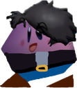
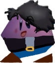

Origen
Su origen viene de una parodia a la palabra Envidia y del administrador de Redshockinc  "Endby/Kirby Kun". El creador de la palabra Endbydia es el usuario Leo 18

Su origen viene de una parodia a la palabra Envidia y del administrador de Redshockinc  "Endby/Kirby Kun". El creador de la palabra Endbydia es el usuario Leo 18
Endbydia es una saga de videojuegos creada originalmente por "El Axelo" o diente bugeado y actualmente cuenta con 2 juegos principales, 2 spin off, 3 demos y actualmente se esta desarrollando el ultimo juego de la saga principal "Endbydia 3"
Tenemos aca una lista organizada de los juegos, spin off y demos que hay hasta la fecha
Endbydia no solo es tan solo una saga de videojuegos tambien tenemos entre otras cosas:
Como he dicho recientemente no es tan solo una saga de videojuegos tambien tiene producciones cinematograficas del UCE (Universo Cinematografico de Endbydia) Creado por el usuario "Starz RP" En donde nos explica el inicio de "los Poyovengers"
Endbydia posee una gran comunidad en el que de vez en cuando comparten fanarts de la saga o dan ideas para futuros proyectos
El UEE (Universo Extendido de Endbydia) era una pagina donde nos contaba la historia de los poyos y la creacion de "los Poyovengers" tambien creada por "Starz RP" este proyecto fue cancelado en su 5ta o 6ta fase debido a que el autor no le estaba convenciendo y con esto se formo el UCE